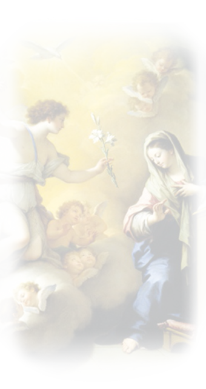
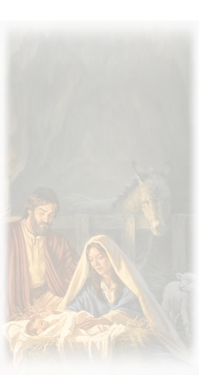
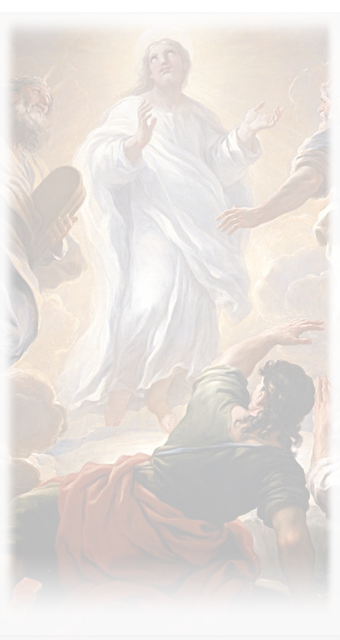
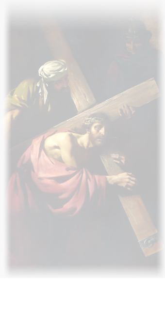
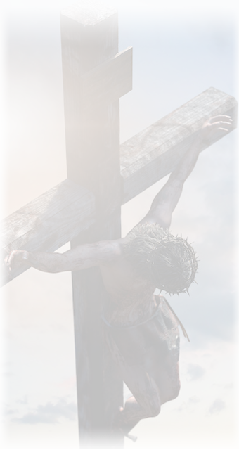
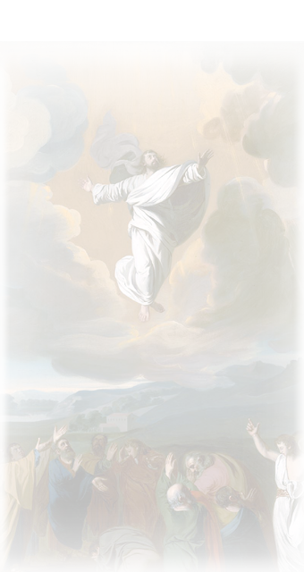
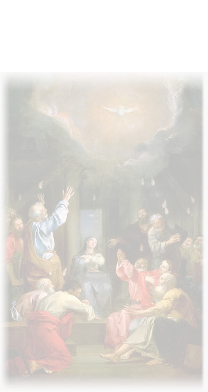

In the name of the Father,
and of the Son and
of the Holy Spirit.
Amen.
The Apostles' Creed:
I believe in God, the Father almighty,
Creator of heaven and earth,
and in Jesus Christ, His only Son, our Lord.
He was conceived by the Holy Spirit,
and born of the Virgin Mary.
He suffered under Pontius Pilate,
was crucified, died and was buried.
He descended into hell.
On the third day He rose again.
He ascended into heaven,
and is seated at the right hand of God the Father Almighty.
He will come again to judge the living and the dead.
I believe in the Holy Spirit,
the Holy Catholic Church,
the communion of saints,
the forgiveness of sins,
the resurrection of the body,
and life everlasting.
Our Father:
Our Father, Who art in heaven,
Hallowed be Thy Name.
Thy Kingdom come, Thy Will be done,
On earth as it is in Heaven.
Give us this day, our daily bread,
And forgive us our trespasses,
as we forgive those who trespass against us.
And lead us not into temptation,
but deliver us from evil.
Hail Mary:
"Hail Mary, full of Grace, the Lord is with thee.
Blessed art thou among women, and blessed is the fruit
of thy womb, Jesus. Holy Mary Mother of God, pray for us sinners,
now and at the hour of our death, Amen."
Glory Be:
Glory be to the Father,
the Son, and the Holy Spirit;
as it was in the beginning,
is now, and ever shall be,
world without end. Amen.
O my Jesus,
forgive us our sins,
save us from the fire of hell,
lead all souls to heaven,
especially those who are in
most need of Thy mercy.
Hail, Holy Queen:
Hail, holy Queen, mother of mercy,
our life, our sweetness, and our hope.
To thee do we cry, poor banished
children of Eve. To thee do we send
up our sighs mourning and weeping
in this valley of tears.
Turn then, most gracious advocate,
thine eyes of mercy toward us,
and after this our exile show us
the blessed fruit of thy womb,
Jesus. O clement, O loving,
O sweet Virgin Mary.
Pray for us,
O Holy Mother of God.
That we may be made worthy
of the
promises of Christ.
In the Name of the Father,
and of the Son
and of the Holy Spirit.
Close with the concluding prayer
Let us pray:
O God, whose Only Begotten Son, by His Life, Death,
and Resurrection, has purchased for us the rewards of
eternal life, grant, we beseech thee,
that while meditating on these mysteries
of the most holy Rosary of the Blessed
Virgin Mary, we may imitate what they contain
and obtain what they promise,
through the same Christ our Lord. Amen.
--------------------❤--------------------
Decades
Rosaries
1st: The Annunciation
"In the sixth month the angel Gabriel was sent from God to a city of Galilee named Nazareth, to a virgin betrothed to a man whose name was Joseph, of the house of David; and the virgin's name was Mary"

2nd: The Visitation
"In those days Mary arose and went with haste into the hill country, to a city of Judah, and she entered the house of Zechariah and greeted Elizabeth. And when Elizabeth heard the greeting of Mary, the babe leaped in her womb; and Elizabeth was filled with the Holy Spirit and she exclaimed with a loud cry, 'Blessed are you among women, and blessed is the fruit of your womb!"
3rd: The Birth of Our Lord
"In those days a decree went out from Caesar Augustus that all the world should be enrolled. This was the first enrolment, when Quirinius was governor of Syria. And all went to be enrolled, each to his own city. And Joseph also went up from Galilee, from the city of Nazareth, to Judea, to the city of David, which is called Bethlehem, because he was of the house and lineage of David, to be enrolled with Mary, his betrothed, who was with child. And while they were there, the time came for her to be delivered. And she gave birth to her first-born son and wrapped him in swaddling cloths, and laid him in a manger, because there was no place for them in the inn"

4th: The Presentation in the Temple
"And at the end of eight days, when he was circumcised, he was called Jesus, the name given by the angel before he was conceived in the womb. And when the time came for their purification according to the law of Moses, they brought him up to Jerusalem to present him to the Lord (as it is written in the law of the Lord, 'Every male that opens the womb shall be called holy to the Lord') and to offer a sacrifice according to what is said in the law of the Lord, 'a pair of turtledoves, or two young pigeons"
5th: The finding of Jesus in the temple
"Now his parents went to Jerusalem every year at the feast of the Passover. And when he was twelve years old, they went up according to custom; and when the feast was ended, as they were returning, the boy Jesus stayed behind in Jerusalem. His parents did not know it. After three days they found him in the temple, sitting among the teachers, listening to them and asking them questions; and all who heard him were amazed at his understanding and his answers"
1st: The Baptism in the Jordan
"And when Jesus was baptized, he went up immediately from the water, and behold, the heavens were opened and he saw the Spirit of God descending like a dove, and alighting on him; and lo, a voice from heaven, saying, 'This is my beloved Son, with whom I am well-pleased"
2nd: The wedding feast of Cana
"On the third day there was a marriage at Cana in Galilee, and the mother of Jesus was there; Jesus also was invited to the marriage, with his disciples. When the wine failed, the mother of Jesus said to him, 'They have no wine.' And Jesus said to her, 'O woman, what have you to do with me? My hour has not yet come.' His mother said to the servants, 'Do whatever he tells you"
3rd: The proclamation of the kingdom of God
"The time is fulfilled, and the kingdom of God is at hand; repent, and believe in the gospel"
4th: The Transfiguration
"And after six days Jesus took with him Peter and James and John his brother, and led them up a high mountain apart. And he was transfigured before them, and his face shone like the sun, and his garments became white as light"

5th: The institution of the Eucharist
"Now as they were eating, Jesus took bread, and blessed, and broke it, and gave it to the disciples and said, 'Take, eat; this is my body"
1st: The agony in the Garden
"Then Jesus went with them to a place called Gethsemane, and he said to his disciples, 'Sit here, while I go yonder and pray.' And taking with him Peter and the two sons of Zebedee, he began to be sorrowful and troubled. Then he said to them, 'My soul is very sorrowful, even to death; remain here, and watch with me.' And going a little farther he fell on his face and prayed, 'My Father, if it be possible, let this cup pass from me; nevertheless, not as I will, but as you will"
2nd: The scourging at the pillar
"Pilate released Barabbas to them, but after he had Jesus scourged, he handed him over to be crucified"
3rd: The crowning with thorns
"Then the soldiers of the governor took Jesus into the praetorium, and they gathered the whole battalion before him. And they stripped him and put a scarlet robe upon him, and plaiting a crown of thorns they put it on his head, and put a reed in his right hand. And kneeling before him they mocked him, saying, 'Hail, King of the Jews!"
4th: The carrying of the cross
"And they compelled a passer-by, Simon of Cyrene, who was coming in from the country, the father of Alexander and Rufus, to carry his cross. And they brought him to the place called Golgotha (which means the place of a skull)"

5th: The crucifixion
"And when they came to the place which is called The Skull, there they crucified him, and the criminals, one on the right and one on the left. And Jesus said, 'Father, forgive them; for they know not what they do' ...
It was now about the sixth hour, and there was darkness over the whole land until the ninth hour, while the sun's light failed; and the curtain of the temple was torn in two. Then Jesus, crying with a loud voice, said, 'Father, into thy hands I commit my spirit!' And having said this he breathed his last"

1st: The Resurrection
"But on the first day of the week, at early dawn, they went to the tomb, taking the spices which they had prepared. And they found the stone rolled away from the tomb, but when they went in they did not find the body. While they were perplexed about this, behold, two men stood by them in dazzling apparel; and as they were frightened and bowed their faces to the ground, the men said to them, 'Why do you seek the living among the dead? He is not here, but has risen"
2nd: The Ascension
"So then the Lord Jesus, after he had spoken to them, was taken up into heaven, and sat down at the right hand of God"

3rd: The descent of the Holy Spirit
"When the day of Pentecost had come, they were all together in one place. And suddenly a sound came from heaven like the rush of a mighty wind, and it filled all the house where they were sitting. And there appeared to them tongues as of fire, distributed and resting on each one of them. And they were all filled with the Holy Spirit and began to speak in other tongues, as the Spirit gave them utterance"

4th: The Assumption
"Henceforth all generations will call me blessed; for he who is mighty has done great things for me"
5th: The crowning of Our Lady Queen of Heaven
"And a great portent appeared in heaven, a woman clothed with the sun, with the moon under her feet, and on her head a crown of twelve stars"